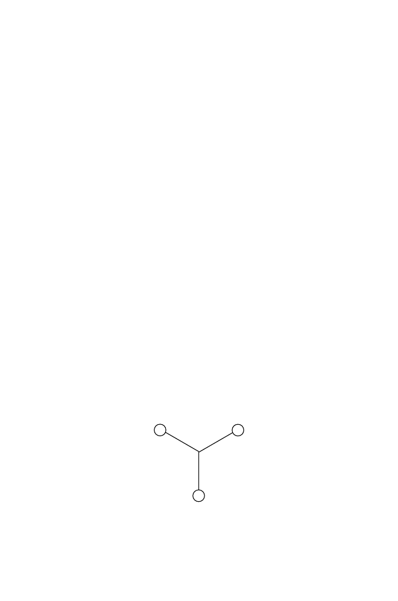

344
12 Inferring the Past: Phylogenetic Trees
A tree is said to be rooted (or have a
root
) if there is a single ancestral
node from which all other nodes descend, and in this case the root node is
connected to two branches. Trees may be either rooted or unrooted, as illus-
trated in Fig. 12.3. If the tree is rooted, direction is defined by the evolution-
ary time-scale, and we usually associate increasing time with the downward
or rightward direction. If there is no root, all we can say is that the leaves
correspond to the ultimate descendants of some ancestor, but we do not know
whether the internal node adjacent to any leaf is its ancestor, nor do we know
the ancestral relationships of the internal nodes. Put another way, we don’t
know which direction along the edges corresponds to increasing time. In the
unrooted tree shown in Fig. 12.3A, OTU 7 may be an ancestor of 8, corre-
sponding to placement of the root as indicated by arrow R1, or 8 might be
an ancestor of 7, as would be the case if the root were placed as indicated
by arrow R2. Once the root is placed, the ancestor-descendant orientation
of all edges is established. Figure 12.3B shows the two different rooted trees
corresponding to the two different placements of the root in Figure. 12.3A.
We have so far been representing trees graphically, and we will continue
to do so. However, note that there are other representations. For instance, if
we construct a tree with branches like those illustrated in Fig. 10.3, that tree
could be represented as
(((Ho,Pa),Go),Hy).
12.2.2 Numbers of Trees
Before proceeding to a discussion of methods for constructing trees, we need
to be aware of the magnitude of the problem. What we seek is the tree or
collection of trees that best represents the ancestor-descendant relationships
implicit in the data. We might naively imagine that we could draw all possible
trees and see how well each fits the data. The unsuitability of this approach is
evident if we calculate the possible trees that can be drawn relating
n
different
species. We first consider unrooted trees. The simplest unrooted tree is shown
below.
1
2
3
It connects three species, has a single internal node, and contains no internal
branches. The number of internal branches is thus
n
−
3 = 0. Now consider
the case
n
= 4 by adding one leaf or species (connected between the internal
node and 1, for example), as shown in the diagram below.